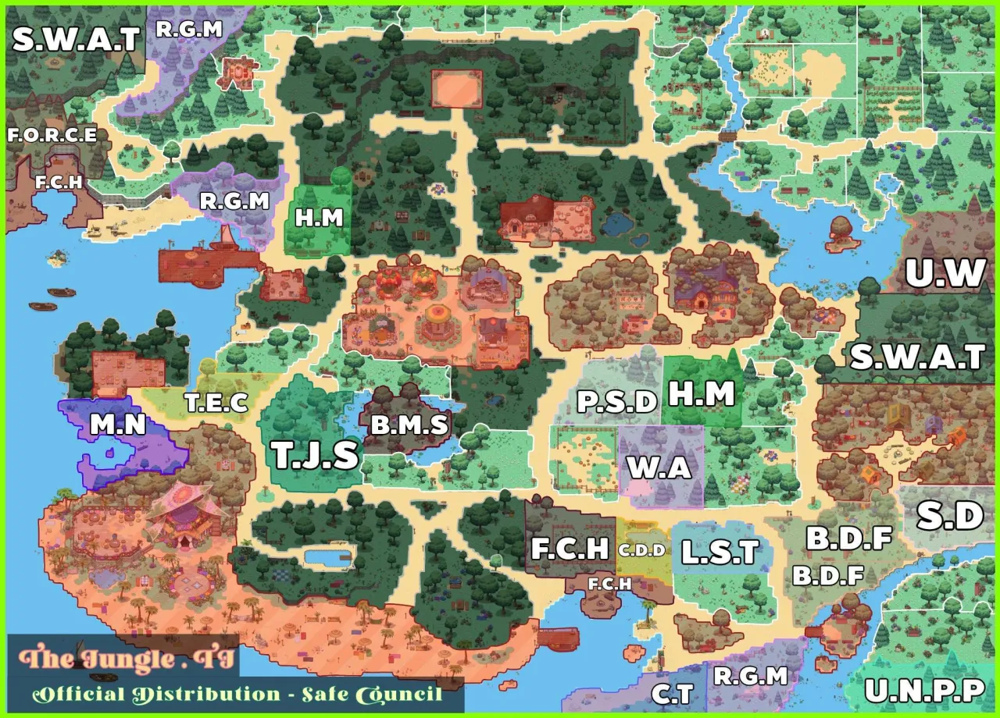

COMUNIDAD / TERRITORIOS
Mapa de clanes
En esta sección podrás consultar el mapa de clanes y revisar sus últimas actualizaciones.

En esta sección podrás consultar el mapa de clanes y revisar sus últimas actualizaciones.
